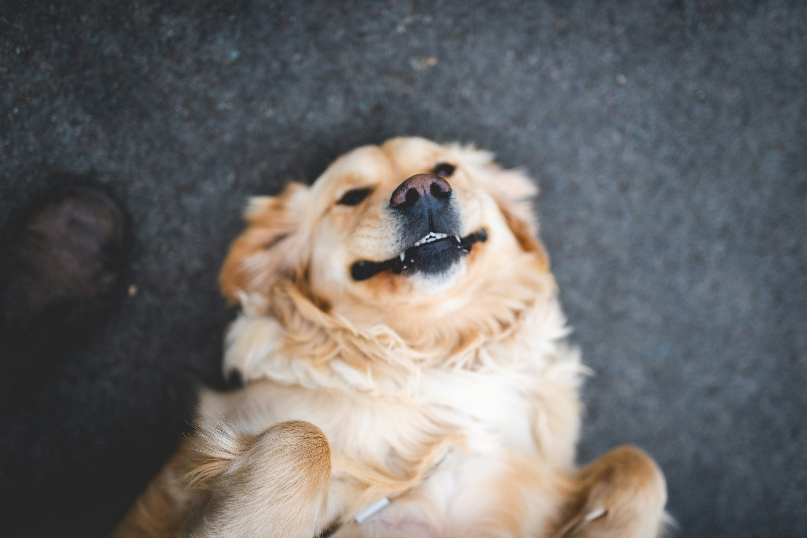

The Golden Retriever is a Scottish breed of retriever dog of medium size. It is characterised by a gentle and affectionate nature and a striking golden coat, and is among the most frequently registered breeds in several Western countries.
It is a frequent competitor in dog shows and obedience trials; it is also used as a gun dog (a type of hunting dog for soft-mouthed retrieving of fowl) and may be trained for use as a guide dog.
The breed was created by Sir Dudley Marjoribanks at his Scottish estate Guisachan in the late nineteenth century. He cross-bred Flat-coated Retrievers with Tweed Water Spaniels, with some further infusions of Red Setter, Labrador Retriever and Bloodhound. The breed was recognised by the Kennel Club in 1913, and during the interwar period spread to many parts of the world.
History
The Golden Retriever was developed in Scotland in the nineteenth century by Sir Dudley Marjoribanks (later to become Baron Tweedmouth) from Flat-coated Retrievers judiciously crossed with Tweed Water Spaniels and some other British dog breeds.[2][3] Prior to the 1952 publication of the very detailed stud book which had been meticulously maintained by Marjoribanks, a number of romantic tales were published about the origins of the breed.[2][3][4]

In the 1860s Marjoribanks set out to create what to his mind was the ultimate breed of retriever at his Scottish estate Guisachan.[2][5] He started by acquiring a yellow-coloured Flat-coated Retriever dog called Nous;[note 1] Nous had been whelped in June 1864 and was the only yellow pup in an otherwise all black-coloured litter.[2][4] Whilst uncommon, occasionally liver, brown, golden or yellow-coloured purebred Flat-coated Retriever pups are whelped to matings of two black parents.[3][6] It is the pedigree of Nous that was the source for the romantic tales of the heritage of the Golden Retriever.[2] One early account claimed Nous was purchased from a Russian circus trainer in Brighton, another claimed he was bought from a cobbler, and yet another claimed a gypsy.[2] The stud book states that Nous was a Flat-coated Retriever bred by Lord Chichester on his Stanmer Park estate near Brighton.[5][6][7]
In 1868 Nous was mated to a Tweed Water Spaniel bitch named Belle, who is recorded in the stud book as being whelped in 1863 and being of "Ladykirk breeding".[2][6] The litter from this mating consisted of four yellow pups, Primrose, Ada, Cowslip and Crocus.[7][8] The best bitch from this litter, Cowslip, was mated to a Tweed Water Spaniel called Tweed with the mating producing a bitch pup called Topsy.[5] Cowslip was subsequently mated to a Red Setter called Sampson; that mating produced a dog pup called Jack.[5] Topsy was mated with a black Flat-coated Retriever called Sambo and a bitch pup from that litter, Zoe, was mated back to Jack and two pups from that mating were retained, a dog called Nous II and a bitch called Gill.[5] Gill was mated to a black Labrador Retriever called Tracer, and a bitch pup from that mating, Queenie, was mated back to Nous II; all Golden Retrievers descend from this mating.[5] The progeny from these various matings varied in colour from pure black to light cream, but it was the golden-coloured ones that were retained and mated to each other, forming the foundation stock of the Golden Retriever breed.[2] Marjoribanks is also known to have used a sandy-coloured Bloodhound and another Labrador in subsequent years of the breeding programme.[4][5]

In 1952 Marjoribanks's great-nephew, Giles Fox-Strangways, 6th Earl of Ilchester, teamed up with Elma Stonex and together they studied Marjoribanks's stud book.[6] In 1960 their research was published, presenting all of the evidence required to counter all tales of Russian ancestry.[6] The stud book, which covers the period from 1868 to 1890, is preserved in the library of the Kennel Club in London.[5]
Winifred Charlesworth with two of her Golden Retrievers, 1910s In the early days Golden Retrievers were called the 'Flat-coated Retriever, Golden',[note 2] Initially the Golden Retriever was considered a colour variety of the former breed.[2] In 1903 the Kennel Club recorded the first examples, listing them in the same register as Flat-coats.[2] In 1904 a Golden Retriever won a field trial and in 1908 the first examples were exhibited at conformation shows.[7] In 1911 a breed club was formed for the breed in England, the Golden Retriever Club, and they were given a new name, the 'Yellow or Golden Retriever'; from this point they were increasingly seen as a separate breed from the Flat-coated Retriever.[2] It was not until 1913 that the Kennel Club began recording them on a separate breed register from the Flat-coated Retriever and in 1920 the 'Yellow or' was dropped from the breed name and they were officially called the 'Golden Retriever'.[2][6]
One early twentieth century enthusiast of the breed, Winifred Charlesworth, was instrumental in the establishment of the breed club as well as its separate Kennel Club recognition.[6] It was she who drew up the first breed standard, which was adopted by the Kennel Club and with only minor amendments and remains largely unchanged.[6] She bred and exhibited the first Golden Retriever Show Champion, was a strong advocate for maintaining the working instincts of the breed, and she is credited with popularising it at field trials and introducing it to shooting sportsmen.[note 3][6]
In the years after the First World War its popularity increased markedly and in the 1920s and 1930s it spread through much of the Western world.[6] The Canadian Kennel Club recognised the breed in 1927, the American Kennel Club in 1932; the first examples were registered in France in 1934 and Australia in 1937.[2] The worldwide popularity of the breed meant it did not suffer the misfortunes many British dog breeds did during the Second World War due to British wartime restrictions on the breeding of larger dogs, with ample quality breeding stock available globally to ensure none of its characteristics were lost.[6]
Since the 1940s its popularity has continued to grow, and it has become one of the most recognised and most frequently registered dog breeds in the Western world.[2]
Description
Appearance
The Golden Retriever is a powerfully built, medium-sized breed of dog; according to the Kennel Club breed standard, dogs stand from 56 to 61 centimetres (22 to 24 in) and bitches from 51 to 56 centimetres (20 to 22 in).[6][9] Healthy adult examples typically weigh between 25 and 34 kilograms (55 and 75 lb).[10]
The Golden Retriever has a broad head with a well-defined stop, with dark eyes set well apart, a wide and powerful muzzle, a large black nose, dark-pigmented and slightly drooping flews, and ears of moderate size set high and hanging with a slight fold.[10][11] The neck is muscular and fairly long with loose-fitting skin, the shoulders well laid-back and long-bladed, and the body deep through the chest with well-sprung ribs.[6][10][11] The back is usually level from withers to croup and the long, straight tail is usually carried flat, roughly in line with the back.[6][10][11] The forelegs are straight with good bone, the hind legs are powerful with well bent stifles and muscular thighs, and the feet are cat-like.[6][10][11]

The double coat is a recognisable and striking feature:[8] the outer coat is long, flat or wavy and has good feathering on the forelegs, while the undercoat is dense and provides weather resistance.[10][11] The coat can be any shade of cream, yellow or gold; the coat typically becomes paler with age.[10][11] The Kennel Club breed standard prohibits red or mahogany-coloured coats, but a few white hairs on the chest are permitted.[9] Originally only yellow or golden coloured examples were permitted, this excluded many outstanding cream coloured dogs; to overcome this in 1936 the Kennel Club's standard was amended to include the cream colour.[6] The cream colour, which in more modern times can be almost white, has become the dominant colour and is particularly favoured by conformation show exhibitors.[12] Golden Retrievers that are bred for conformation shows tend to have longer and finer coats than those bred for working as gundogs.[12]
The Kennel Club breed standard is accepted by every kennel club in the world except those of Canada and the United States.[6] Breed standards in North America call for a slightly taller dog[note 4] and the cream colour is not permitted.[6]
Temperament
The Golden Retriever is considered an intelligent, gentle natured and very affectionate breed of dog.[3][8] As is typical with retriever breeds, the breed is generally calm and biddable, being very easy to train and extremely keen to please their master.[6][8] The breed is known to make excellent pets and family dogs, being generally extremely tolerant of children and keen to accompany any member of the family in a range of activities.[4] Due to their affable natures, the breed is often completely devoid of guarding instincts.[4] However, there have also been reports of some very aggressive Golden Retrievers in certain lineages. It has been suggested that these variations in aggression are partially caused by genetic factors.[14]

The breed usually retains many of their gundog traits and instincts including an excellent sense of smell and a strong instinct to retrieve; even among those not trained as gundogs it is typical for Golden Retrievers to present their owners with toys or other objects.[6][8] Compared to other retriever breeds the Golden Retriever is typically quite slow to mature.[8][12]